验证码识别涉及很多方面的内容。入手难度大，但是入手后，可拓展性又非常广泛，可玩性极强，成就感也很足。
验证码识别涉及技术
验证码图像处理
验证码图像识别技术主要是操作图片内的像素点，通过对图片的像素点进行一系列的操作，最后输出验证码图像内的每个字符的文本矩阵。
- 读取图片
- 图片降噪
- 图片切割
- 图像文本输出
字符识别
验证码内的字符识别主要以机器学习的分类算法来完成，目前我所利用的字符识别的算法为KNN（K邻近算法）和SVM（支持向量机算法），后面我会对这两个算法的适用场景进行详细描述。
####
- 获取字符矩阵
- 矩阵进入分类算法
- 输出结果
涉及的Python库
这次研究主要使用了以下这三个库
####
- numpy（数学处理库）
- Image（图像处理库）
- ImageEnhance（图像处理库）
验证码识别技术难点
验证码识别由两部分组成，分别是验证码图片处理和验证码字符学习。
####
- 在编码过程中，我认为难度最大的部分是识别算法的学习和使用。
- 在写文档的时候，我认为难度最大的部分是图像处理部分，图像处理部分需要对抗各种干扰因素，对抗不同类型的验证码需要不同的算法支持，因此图像处理程序需要对各种验证码具体问题具体分析，不能抱有大而全的思想，务必注重细节处理。
验证码识别过程：学习与识别
验证码识别的过程分为学习过程与识别过程
####
学习
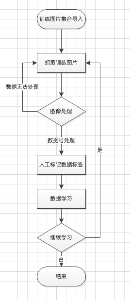
识别
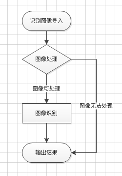
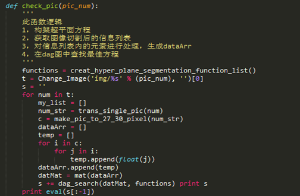
上图代码运用的是SVM的识别过程
验证码图像处理
验证码图像处理脑图
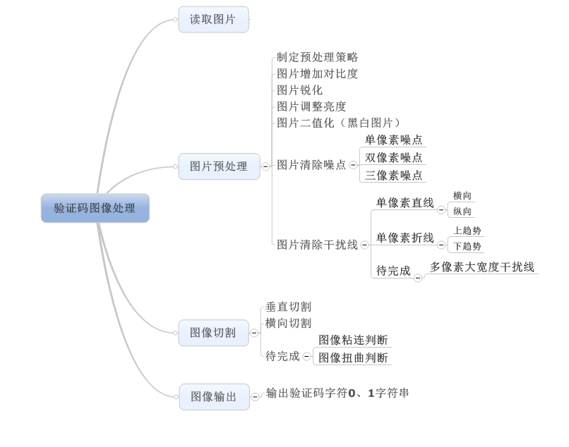
如上图所示，验证码图像处理模块是一个结构规整、内部分支复杂的模块，整个验证码识别准确率全靠这个模块，可谓是整个验证码识别的根本。如上文所说，图像处理模块玩的是图片内的每一个像素百度百科：像素，因此这个模块好上手。
import Image
im = Image.open(‘%s’%(Dist+Docu_Name)+’.png’)
上面这两句便可以打开一个图像对象，im对象内置许多方法有兴趣可以查看Image库源码或者参考Python Imaging Library Handbook
图片增加对比度、锐化、调整亮度、二值化，这四块是比较规整的模块，处理调用库函数即可。下面主要说说图片降噪和清楚单像素干扰线。
图片清除噪点
图片降噪的原理是利用9宫格内信息点（信息像素，一般经过预处理的信息像素为黑色）。
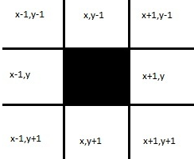
上图黑色部分为(x，y)，单像素噪点处理时分别验证周围的八个点是否为白色，如果为白色即可判断（x，y）为噪点。同理双像素噪点需要考虑两个像素的排列是横向还是纵向或者是斜向，之后判断其周围10个像素是否均为白色像素即可。同理三像素噪点也是这样，我尝试的情况三像素噪点不包括横向排列和纵向排列。
图片清除干扰线
对于单像素的干扰线目前可以解决，但是大宽度干扰线则会产生判断上的误差，目前不好解决。
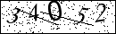
上图的干扰线为单像素，因此通过算法即可解决。
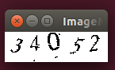
干扰线处理后的图片如上图所示。
图片切割
对于去噪后的图片，我们需要对图片进行切割，切割的目的是为了提取信息，方便把图片中的数字转化为01形式的文本。
我所采用的切割方式是投影法.
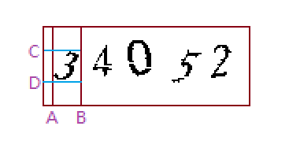
如上图所示，对于切割数字3，首先需要找到垂线A和B，判断步骤是：纵向从左向右扫描图片，找到第一条含有信息点的直线记为A，继续向右扫描，当从A开始，找到第一条无信息点的直线记为B，从投影的角度来看，A与B之间X轴上的投影的信息值均大于0，切割A与B之间的图像后，以新图像为基础，找出C与D，至此便可切割出数字3。
图片切割目前可以仅可对非粘连字符进行切割，对于粘连字符，我的程序并没能很好的处理。
信息输出
当获取了切割好的图片，由于图片只有黑色与白色，因此遍历每一个像素点，根据像素点的颜色来进行0,1输出，一般认为黑色像素输出1，白色像素输出0。
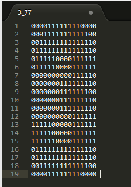
识别算法概述
字符识别算法整体流程很好理解，举个例子，字符像素文本A进入识别算法，通过对算法的结果进行判断，便可以完成识别过程。我实践了两种识别算法，第一种是KNN算法，第二种是SVM算法，下面我将以个人的角度来阐述下这两种算法的原理以及适用场景，个人水平有限，算法细节可以参考我之后给出的链接。
KNN（K邻近算法）
KNN算法是一种简单的算法，KNN算法基本思想是把数据转化为点，通过计算两点之间的距离来进行判断。
在n维度下，两点间距离可以表示为 S = math.sqrt((x1-y1)^2+(x2-y2)^2+.+(xn-yn)^2)。
SVM（支持向量机）
SVM算法相比较KNN算法来说，原理上要复杂复杂的多，SVM算法基本思想是把数据转化为点，通过把点映射到n维空间上，通过n-1维的超平面切割，找到最佳切割超平面，通过判断点在超平面的哪一边，来判断点属于哪一类字符。

但是SVM算法的特点只能在两类中间比较，因此把字符识别运用到该算法上，还需要在比较过程中加以一个遍历算法，遍历算法可以减少大量无效计算，遍历的场景是一个有向无环图。
算法细节文档链接
识别算法适用场景
KNN与SVM的适用场景存在一定区别。
KNN算法在运行过程上来说，并不存在学习过程，只是遍历已知分类进行距离上的判断，根据待测数据与已知分类进行比较，找出与待测距离最近的n个数据来进行匹配，因此当已分类的样本越来越多，KNN算法的运算时间会越来越长。
SVM算法在运行过程中，是存在学习的过程的，通过对已知分类标签进行两两组合，找出每个组合的切割方程。待测数据只需要一个一个计算切割方程，根据切割方程的返回值来判断下一个执行的是哪个方程即可。0-9数字的判断，只需要执行9次方程计算即可。SVM多类分类方法
因此如果大规模识别验证码，我建议适用SVM作为识别算法。
实践细节注意事项
这部分内容是我所遇到的问题。
规则化图像
当切割的验证码以数字呈现在文本里，他们的像素是各不相同的，需要把这些标准化，我选择标准化在27*30像素是一个经验值。此外，还需要把新图像放置在标准化像素的正中央。
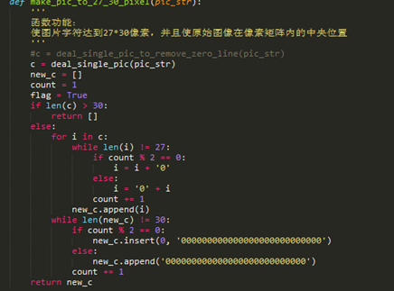
使用SVM构建超平面方程
SVM算法的重点是寻找切割方程，首先需要把待判断的两种元素存入到dataArr和labelArr中，通smoP方程寻找b和alphas。
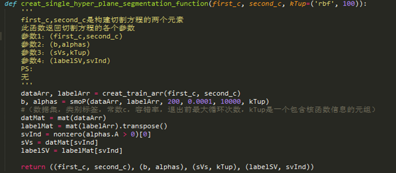
利用方程组预测——遍历dag图
由于svm是二分类器，只能判断是或者不是，只需要使用k一1个决策函数即可得出结果，不存在误分、拒分区域；另外，由于其特殊的结构，故有一定的容错性，分类精度较一般的二叉树方法高。
对于0123456789 共10个字符 共有45种非重复组合。利用dag只需判断9次即可找出目标。
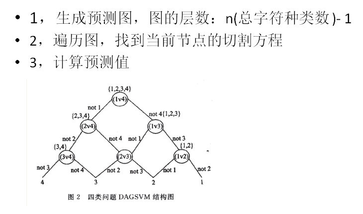
实践总结
- 运用机器学习算法时，如果不理解实现原理，先直接套接口，总之先实现功能，不必强求对算法的彻底理解。
- 识别算法是通用的。
- 处理不同验证码，应该有不同的处理策略。
- 测试发现，主要耗时发生在构建方程过程中，构建方程耗时105s，识别1s。
- 图像去噪时对于大宽度的干扰线没有好的解决办法（干扰线宽度大于3像素）。
- 图像切割在面临图像粘连时，目前无很好的处理方法。